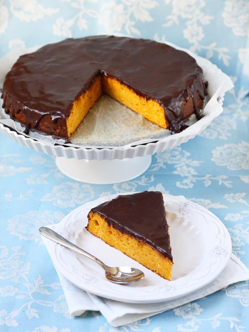

Kakaoglasuuriga porgandikoogi retsept on pärit minu kooliajast, kui seda kodunduse tunnis küpsetama pidime. Tegime porgandikooki, mida meist keegi polnud kunagi söönud. Ma poleks arvanudki, et porgandist saab teha magusat kooki ja veel nii maitsvat. Igal juhul teen selle retsepti järgi kooki väga tihti töö juurde kaasa ja ka koju peolauale.
| Koostisosad | Glasuur |
|---|---|
|
|
|
Jahtunud koogi võib keskelt pooleks lõigata ning vahele panna suhkruga hapukoort. See muudab koogi veelgi paremaks, kuid hea on ka ilma.
Helina H. © 2022